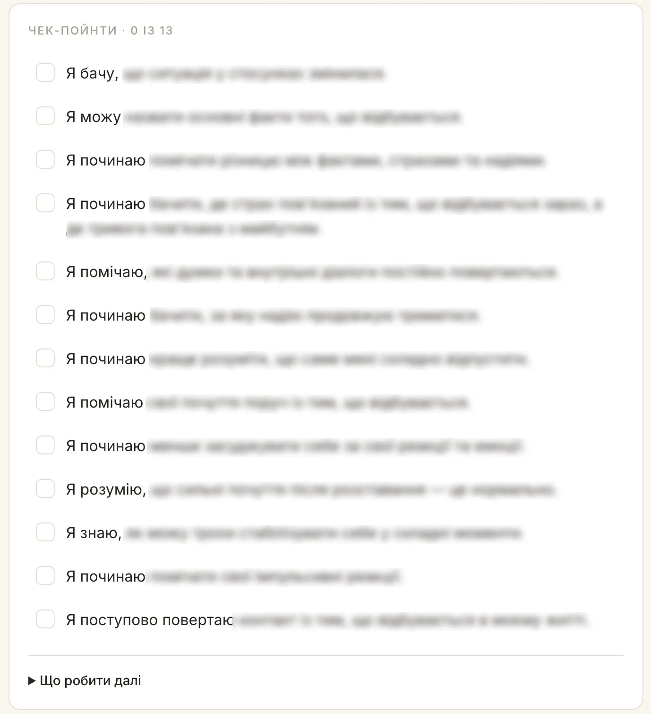
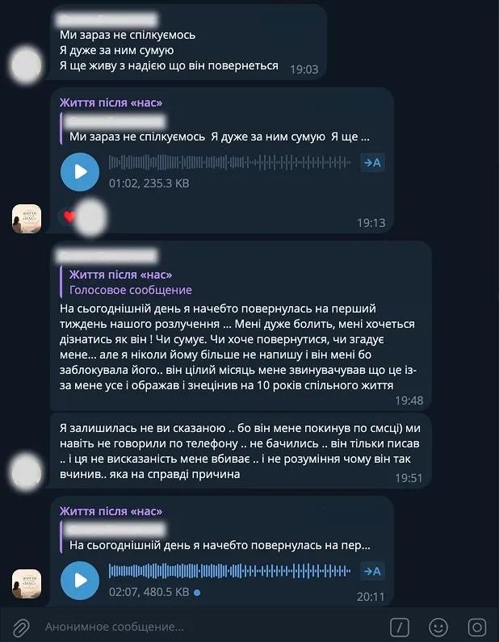

Дмитро Карпачов
12 кроків виходу з емоційної залежності після розставання. Авторська програма Дмитра Карпачова та Ірини Макаренко.
Вартість
899 грн/міс
Для порівняння: особиста година з Дмитром Карпачовим — від $800.
Почати перший крокПерші 7 днів — з поверненням грошей. Скасувати можна будь-коли, підписка помісячна.
Далі може бути трохи неприємно.
Ви перевіряєте, коли він був онлайн. Перечитуєте старі повідомлення. Заходите на сторінку подивитися, кого він додав. Робите це десятки разів на день і щоразу обіцяєте собі, що це востаннє.
А потім пояснюєте це собі одним словом: слабка.
Ви не слабка. Ваша нервова система просто ще не отримала повідомлення, що зв'язок завершено.
Прив'язаність — не рішення, яке приймають розумом. Це механізм. І поки він працює, будь-яка порада «займи себе чимось» б'є повз ціль.
— Дмитро Карпачов
Перевірте себе за 30 секунд
Відмітьте те, що впізнаєте.
Кожен із цих пунктів — не риса характеру, а частина того самого циклу.
І шукаєте причину в собі. Думаєте, що треба було бути іншою людиною.
«Якщо цих стосунків більше немає, я взагалі не розумію, хто я тепер»
І це теж знайомо
Жодна з цих спроб не була дурною. Просто всі вони працюють із наслідком — з тим, що вам болить прямо зараз. І жодна не чіпає причину.
Причина — не в тому, що ви його не забули. Причина в тому, що зв'язок усередині досі триває.
Програма
Вам не потрібно за один день «прийняти», «простити», «відпустити» і прокинутися новою людиною. Вихід розбитий на 12 послідовних кроків.
Починається з простого питання: що насправді відбувається? Без припущень і спроб прочитати думки іншої людини.
Ви вчитеся відокремлювати факт від власної інтерпретації, страху й надії. Саме тут повертається ясність.
Можна говорити про свої почуття, пропонувати, домовлятися. Але неможливо прийняти рішення за іншу дорослу людину.
Робота з бажанням переконати, довести, дочекатися, знайти правильні слова, зробити ще одну спробу.
Змінюється не одна частина життя, а майже все: дім, побут, плани, свята, фінанси, спілкування, взаємодія з дітьми, уявлення про майбутнє.
Тут ви поступово адаптуєтеся до життя, яке вже стало іншим.
Що вона робить? Чому мовчить? Чи повернеться? Цей нескінченний аналіз не дає управління ситуацією — він лише утримує іншу людину в центрі вашого життя.
Ви повертаєте увагу туди, де справді можете щось змінювати.
Контакт існує навіть тоді, коли ви нібито «не спілкуєтеся»: перегляд сторінки, перечитування листування, перевірка статусу, очікування повідомлення.
Ви створюєте власний DETOX-протокол. Мінімум 30 днів, у складніших випадках 60 або 90.
Просто календар. Термін підбирається індивідуально всередині програми.
Якщо є спільні діти й контакт припинити неможливо — вчитеся змінювати його формат. Коротко, по суті, з чіткими межами.
Чому тягне назад навіть після болю? Чому одне повідомлення різко покращує стан, а мовчання викликає майже фізичну тривогу?
Ви починаєте бачити механізми, які підтримують фіксацію — і відрізняти глибину переживань від реальної якості стосунків.
Після втрати хороше стає яскравішим, а холодність, конфлікти й самотність відходять на периферію.
Тут ви повертаєте повну картину: що справді було цінним і яку ціну ви за це платили.
Чому саме ця людина? Що ви намагалися отримати — визнання, безпеку, відчуття власної цінності, підтвердження, що вас можна любити?
Робота з потребами, очікуваннями й повторюваними сценаріями. Щоб не опинитися в тих самих стосунках з іншою людиною.
Іноді люди роками продовжують стосунки з людиною, якої поруч давно немає. Говорять подумки, сперечаються, чекають вибачення.
Фізична відсутність партнера ще не завершує внутрішній діалог. Цьому і присвячений крок.
«А що мені взагалі подобається без цієї людини?» Чого я хочу, як хочу проводити вечори, яке життя хочу будувати?
Після довгих стосунків себе доводиться збирати заново: інтереси, звички, межі, плани, власну окремість.
Терміново знайти когось нового — або ніколи більше нікого не підпускати близько. Обидві реакції можуть бути способом впоратися з болем.
Тут ви розбираєтеся, чи справді готові до нової близькості.
Що ви тепер знаєте про себе? Які сценарії почали бачити? Які межі більше не готові порушувати?
І які стосунки хочете будувати далі.
Кожен із 12 кроків містить практичну роботу. Ви будете:
Не потрібно вгадувати, чи «вже пора рухатися далі». Після кожного кроку є конкретні питання:

Так виглядають чек-пойнти всередині кроку
Іноді стає особливо важко: різко посилюється тривога, з'являється сильне бажання негайно написати, починається черговий емоційний відкат.
Для таких моментів є окремий набір практик. Щоб спочатку зменшити інтенсивність стану, повернути контакт із теперішнім моментом і зробити паузу між сильним почуттям та імпульсивною дією. І лише потім вирішувати, що робити далі.
Спільнота
Там можна описувати, що з вами відбувається, говорити про відкати, ставити запитання і бачити інших людей, які проходять схожий шлях.
Одна з найважчих частин розставання — відчуття, що з вами відбувається щось унікальне і незрозуміле. Коли досвід отримує слова й структуру, хаосу стає менше.
Писати не обов'язково. Багато учасниць спершу просто читають.

Реальний фрагмент переписки в чаті · ім'я та фото приховані
Не потрібно знецінювати минуле, переконувати себе, що людина була жахливою, ненавидіти її чи видаляти всі спогади.
Можна пам'ятати, сумувати і цінувати те хороше, що було. І водночас перестати віддавати минулим стосункам своє теперішнє життя.
Повне припинення контакту тут неможливе, тому формат спілкування розбирається окремо.
Як відділити батьківство від колишніх партнерських стосунків, не робити дитину посередником і не збирати через неї інформацію про особисте життя колишнього партнера.
Цей блок програми — від Дмитра Карпачова
Чесно
І це не «або-або». Якщо ви вже в терапії, програма добре з нею поєднується — багато хто проходить її паралельно й приносить матеріал на сесії.
Результат
Уявіть, що одного ранку ви прокидаєтеся і не тягнетеся одразу до телефону.
І найважливіше — вам поступово стає байдуже, повернеться ця людина чи ні
Не тому, що ви стерли минуле. Просто відповідь на це питання більше не визначає ваше майбутнє. У вас знову з'являються власні плани і власні бажання.
Автори проєкту
Тому що це та сама тема. Те, як доросла людина тримається за стосунки, які завдають болю, формується задовго до цих стосунків — у ранній прив'язаності. Двадцять років Дмитро працює саме з цим механізмом, просто найчастіше говорить про нього публічно на прикладі дітей і батьків.
Методологію програми написала Ірина Макаренко — її спеціалізація саме розрив і вихід з емоційної залежності. Дмитро — співавтор: окремі блоки, зокрема про спілкування після розставання, коли є спільні діти, його.
Запитання
Так, будь-коли. Підписка помісячна, вас ніхто не тримає. Доступ зберігається до кінця вже оплаченого місяця.
Перші 7 днів — з поверненням грошей. Без пояснень і без розмов «а давайте ще спробуємо».
Ви самі вирішуєте, під яким іменем бути — багато учасниць змінюють ім'я в Telegram перед входом. Ваш номер телефону в чаті не видно.
Писати щось про себе ніхто не зобов'язує. Можна просто читати — це теж працює.
Ні, і ми цього не обіцяємо. Це структурована програма самостійної роботи з підтримкою — вона добре поєднується з терапією, а не замінює її.
Якщо стан гострий і небезпечний, потрібна очна допомога спеціаліста.
Уроки в кабінеті записані — саме тому їх можна проходити у своєму темпі й повертатися стільки разів, скільки потрібно.
Раз на два тижні — прямий ефір із розбором тем і запитань учасниць. Питання можна залишити заздалегідь. У чаті працює модерація.
Він повернувся і знову пішов. Ви живете разом, але фактично не разом. Ви самі ініціювали розрив, а легше не стало. У вас спільні діти. Він одружений. Минуло вже два роки.
Механізм у всіх цих ситуаціях один і той самий — зв'язок, який триває всередині, хоча зовні вже закінчився. Саме з ним працює програма.
Так. Строк не має значення. Має значення інше: чи продовжуєте ви подумки розмовляти з цією людиною, звіряти з нею своє життя і чекати відповіді на питання, яке вже не має відповіді.
Один крок — приблизно двадцять хвилин лекції плюс практика. Темп задаєте ви: розкладу й дедлайнів немає.
Якщо ці 12 кроків займуть два місяці — добре. Якщо рік — теж добре.
Нічого не згорає. Кроки залишаються відкритими, прогрес зберігається. Відкати не обнуляють пройдений шлях — це нормальна частина процесу, і в програмі про це є окремий блок.
Підписка помісячна: 899 грн раз на місяць. Списання автоматичне, поки ви не скасуєте. Доступ до кабінету відкривається після першої оплати.
Програма написана для жінок — більшість прикладів і формулювань з жіночого досвіду. Механізми в ній універсальні, але ми чесно попереджаємо, під кого вона зроблена.
Доступ до програми
899 грн/міс
Перші 7 днів — з поверненням грошей. Скасувати можна будь-коли. Старт — одразу після оплати.
Час усе одно мине. Питання лише в тому, на що ви його витратите: на очікування, терпіння і повторення того самого болю — чи на зміни, які поступово повертають вам ваше життя.
Важливо не те, з якою швидкістю ви рухаєтеся. Важливо те, у якому напрямку
Ще один вечір? Ще один місяць? Ще один рік?
Можна чекати моменту, коли одного ранку все мине саме. А можна почати розбирати цей зв'язок крок за кроком — і поступово побудувати життя, у якому минулі стосунки залишаться частиною вашої історії, але перестануть визначати ваше сьогодення.
Старт — одразу після оплати. Перші 7 днів — з поверненням грошей.
Напишіть менеджеру в Telegram — розкажемо, як влаштована програма, що входить у підписку і чи підійде вона у вашій ситуації. Без дзвінків.
Написати в Telegram